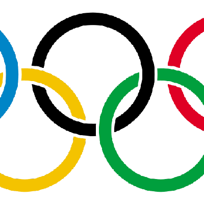

| Sport | Sport (initial) | Body | Sporting Body Webpage | Packages or API |
|---|---|---|---|---|
| Artistic Swimming | SWA | WAqua | https://www.worldaquatics.com | https://api.worldaquatics.com/fina/competitions/3085/events |
| Diving | DIV | WAqua | https://www.worldaquatics.com | https://api.worldaquatics.com/fina/competitions/3085/events |
| Marathon Swimming | OWS | WAqua | https://www.worldaquatics.com | https://api.worldaquatics.com/fina/competitions/3085/events |
| Swimming | SWM | WAqua | https://www.worldaquatics.com | https://api.worldaquatics.com/fina/competitions/3085/events |
| Water Polo | WPO | WAqua | https://www.worldaquatics.com | https://api.worldaquatics.com/fina/competitions/3085/events |
| 3x3 Basketball | BK3 | FIBA | https://www.fiba.basketball | https://cm.fibaorganizer.com/static/docs/api/ |
| Basketball | BKB | FIBA | https://www.fiba.basketball | https://cm.fibaorganizer.com/static/docs/api/ |
| Canoe Sprint | CSP | ICF | https://www.canoeicf.com | https://infoicf.msl.es/webICF/searcherOneSport?page=ZZS100R_@@@@@@@@@@@@@@@@@@@@@ENG |
| Canoe Slalom | CSL | ICF | https://www.canoeicf.com | https://infoicf.msl.es/webICF/searcherOneSport?page=ZZS100R_@@@@@@@@@@@@@@@@@@@@@ENG |
| Cycling BMX Freestyle | BMF | UCI | https://www.uci.org | https://www.uci.org/api/calendar/upcoming |
| Cycling BMX Racing | BMX | UCI | https://www.uci.org | https://www.uci.org/api/calendar/upcoming |
| Cycling Mountain Bike | MTB | UCI | https://www.uci.org | https://www.uci.org/api/calendar/upcoming |
| Cycling Road | CRD | UCI | https://www.uci.org | https://www.uci.org/api/calendar/upcoming |
| Cycling Track | CTR | UCI | https://www.uci.org | https://www.uci.org/api/calendar/upcoming |
| Artistic Gymnastics | GAR | FIG | https://www.gymnastics.sport | https://www.gymnastics.sport/api/ |
| Rhythmic Gymnastics | GRY | FIG | https://www.gymnastics.sport | https://www.gymnastics.sport/api/ |
| Trampoline Gymnastics | GTR | FIG | https://www.gymnastics.sport | https://www.gymnastics.sport/api/ |
| Volleyball - Beach | VBV | FIVB | https://www.fivb.com | https://www.fivb.org/VisSDK/VisWebService/#Introduction.html |
| Volleyball - Indoor | VVO | FIVB | https://www.fivb.com | https://www.fivb.org/VisSDK/VisWebService/#Introduction.html |
| Equestrian - Dressage | EDR | FEI | https://www.fei.org | https://inside.fei.org/fei/your-role/it-services/it-platforms/fei-database |
| Equestrian - Eventing | EVE | FEI | https://www.fei.org | https://inside.fei.org/fei/your-role/it-services/it-platforms/fei-database |
| Equestrian - Jumping | EJP | FEI | https://www.fei.org | https://inside.fei.org/fei/your-role/it-services/it-platforms/fei-database |
| Wrestling - Freestyle | WRE | UWW | https://uww.org | https://github.com/unitedworldwrestling |
| Wrestling - Greco-Roman | WGR | UWW | https://uww.org | https://github.com/unitedworldwrestling |
| Archery | ARC | WArch | https://www.worldarchery.sport | https://www.worldarchery.sport/api |
| Athletics | ATH | WAthle | https://worldathletics.org | None found |
| Badminton | BDM | BWF | http://bwfbadminton.com | https://extranet-lv.bwfbadminton.com/api |
| Boxing | BOX | AIBA | https://www.iba.sport | None found |
| Breaking | BKG | WDSF | https://www.worlddancesport.org | https://services.worlddancesport.org/api/1 |
| Fencing | FEN | FIE | http://fie.org | None found |
| Field hockey | HOC | FIH | https://www.fih.hockey | None found |
| Football | FBL | FIFA | https://www.fifa.com | https://futdb.app |
| Golf | GLF | IGF | https://www.igfgolf.org | None found |
| Handball | HBL | IHF | http://www.ihf.info | None found |
| Judo | JUD | IJF | https://www.ijf.org | https://judobase.ijf.org/ |
| Modern Pentathlon | MPN | UIPM | https://www.uipmworld.org | None found |
| Rowing | ROW | WRow | https://worldrowing.com | None found |
| Rugby Sevens | RU7 | WRug | https://www.world.rugby | https://github.com/pierre-lamarche/RugbyRanking |
| Sailing | SAL | WSail | https://www.sailing.org/ | None found |
| Shooting | SHO | ISSF | http://www.issf-sports.org/ | None found |
| Skateboarding | SKB | WSkate | http://www.worldskate.org/ | None found |
| Sport Climbing | CLB | IFSC | http://www.ifsc-climbing.org/ | None found |
| Surfing | SRF | ISA | https://www.isasurf.org/ | None found |
| Table Tennis | TTE | ITTF | https://www.ittf.com/ | None found |
| Taekwondo | TKW | WT | http://www.worldtaekwondo.org/ | None found |
| Tennis | TEN | ITF | https://www.itftennis.com/en/ | None found |
| Triathlon | TRI | ITU | https://www.triathlon.org/ | https://github.com/tyler-widdison/rTriathlon |
| Trampoline | GTR | FIG | https://www.gymnastics.sport/site/ | None found |
| Weightlifting | WLF | IWF | https://iwf.sport/ | None found |
OlympicsDataverse
Olympics
Data gathering
A place for all things data via Olympic Sports
Inspiration coming from the https://github.com/sportsdataverse, I found there was no common place with Olympic data. After discovering some sports have public access to data I decided to start this organization with the intent of a data distribution knowledge base.
Summer games
Winter games
